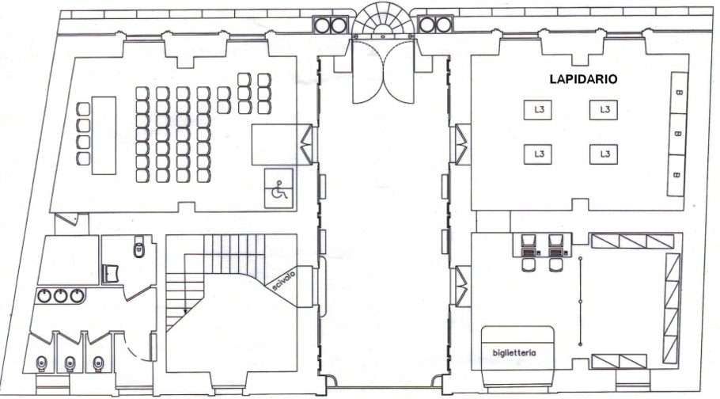
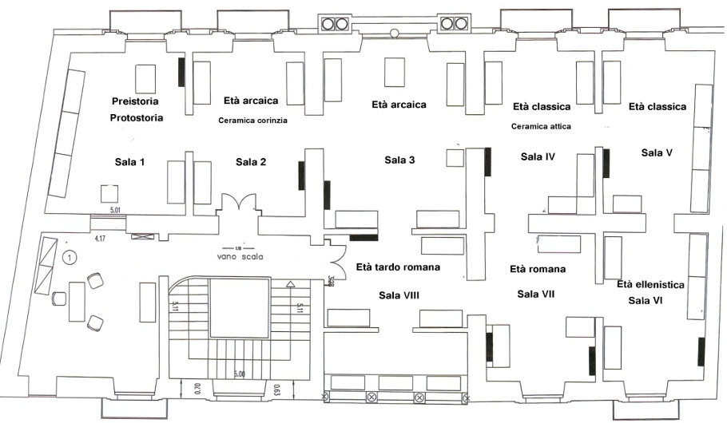

Mappa Museo
Piano Terra

Il percorso espositivo si articola su due piani. Il piano inferiore e il corridoio d’accesso del palazzo ospitano i materiali lapidei. Lungo le pareti trovano posto alcune iscrizioni, le steli funerarie e di grande rilievo per la conoscenza della topografia dell’antica città, un cippo con iscrizione in lingua greca di IV-III secolo a.C.
Piano Primo

Nel piano superiore, l’esposizione dei materiali segue un criterio essenzialmente cronologico e, benché si tratti di una collezione, esso è teso a documentare la lunga e complessa stratificazione storica dell’area: dalle prime frequentazioni umane fino alla romanizzazione, passando attraverso la preistoria e la protostoria (Sala I), l’età arcaica (Sala II-III) l’età classica (Sala IV-V), l’età ellenistica (sala VI), l’età ellenistico-romana (sala VII) e quella tardo romana e bizantina (sala VIII).